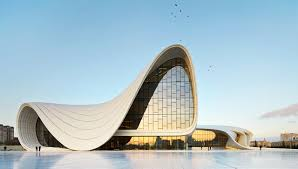

Geometria na Arquitetura
A geometria é fundamental na arquitetura, ajudando a projetar edifícios e estruturas com precisão. Através de conceitos geométricos, arquitetos podem criar projetos que são não apenas esteticamente agradáveis, mas também estruturalmente seguros e eficientes. Exemplos incluem a utilização de formas geométricas complexas em construções modernas, como o Museu Guggenheim em Bilbao.

Além disso, a geometria é usada para otimizar o espaço e a iluminação natural em edifícios. Técnicas como a geometria fractal são empregadas para criar designs inovadores e sustentáveis.